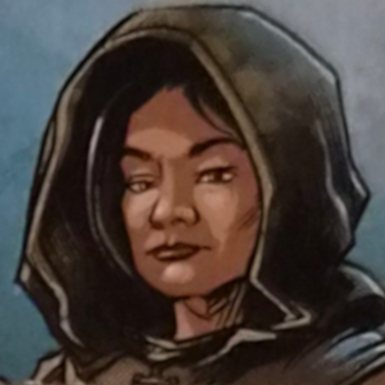

Gareth et Mélisande


- Lieu : château de Garches
- Origine : Bromaël
- Gareth : cuisinier, jovial et débrouillard.
- Mélisande : aide aux fourneaux, discrète. Écoute les conversations des artisans et voyageurs et collecte nouvelles et secrets.
- Occupaient la plus grande chambre du château. Après l'insistance d'Azog, les chambres ont été inversées : Azog a maintenant la plus grande.
Question ouverte
- Mélisande collecte les secrets des voyageurs. Pour qui ?